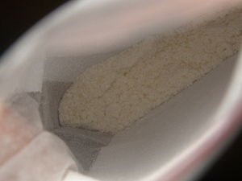

Общие сведения.
Диссоциатив класса арилциклогексиламинов.Это более сильнодействующий (в два-три раза) аналог кетамина.

При употреблении свысше 100мг + возможна передозировка. (опасно для жизни)
Употребляется перорально и интраназально.
Вещество встречается в порошкообразной форме, иногда в таблетках.
Дозировки:
- • Пороговая: 8—20 мг
- • Лёгкая: 10—30 мг
- • Средняя: 40—60 мг
- • Сильная: 50—100+ мг.
Первые эффекты: ≈15—20 мин
Выход на пик действия: через 20—25 мин
Окончание пика действия: через 1,5—2 часа
Пост-эффект: 1—4 часа.
Эффекты:
- 1. Низкие дозы:
- • эйфория, повышенная эмпатия, раскоординация движений, последовательности.
- 2. Средние дозы:
- • растерянность, психическое возбуждение. Также могут быть непредсказуемые психоделические эффекты.
- 3. Высокие дозы:
- • полная диссоциация, деперсонализация, галлюцинации.
Антагонист NMDA рецепторов.
Прекрасно сочетается с марихуаной и синтетическим ТГК. Не сочетается, несет угрозу жизни и здоровью в сочетании с опиатами, алкоголем, бутиратом, бензодиазепинами, метамфетамином, бутаном.